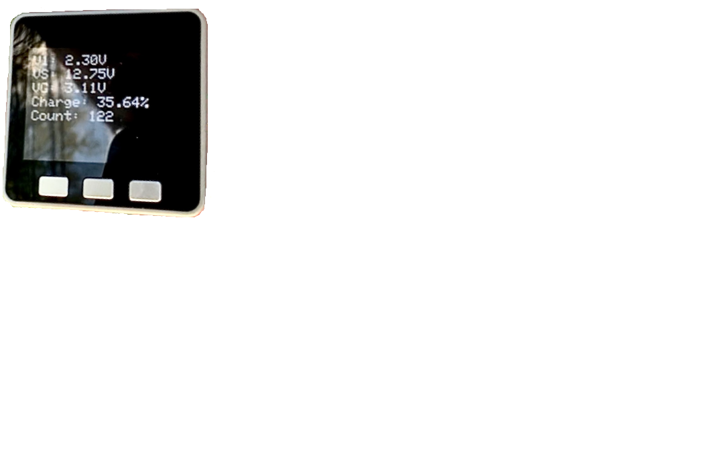

Met with Dr.Hegedus about the project and learnt more about what we are going to build. He gave us details about the project and the required specifications to power everything from an oxygen nebulizer to charging a phone.
Visited the Insititue of Energy Conversion to get a better sense of the project we are making. Also met with the team to work on calculating what parts would give us the proper output.
Met with Dr.Martin outside of class to discuss the project in more detail and gained insight about the wi-fi capabilities along with the software side of things.
Responsible for maintaing the backend of the website and updating the html files. Helped organize the team's GitHub to make it easier to keep track of files and commits. Sent out a list of the parts we needed, for ordering.
Pushed the new commits to the website. Assisted in looking up the parts necessary to build this device.
Pushed the new commits to the website. Emailed Dr. Hegedus a list of parts we want to order, waiting for his approval before we actually order them.
Pushed the new commits to the website. Parts list approved and sent to Tom to be ordered.
Thanksgiving Break
Pushed the new commits to the website. Helped finalize presentation. Practiced presentation and revised.
Pushed the new commits to the website. Worked on the midterm report, using the feedback from the presentation.
Setup server to host our site, since the previous school server we were using has since been shutdown.
Talked to TAs and Dr. Martin about improving various aspects of the charge controller. Installed necessary libraries for the M5STack in arduino.
Updated security of the server. Added code for a basic display on the Stack measuring two voltages.
Ordered more parts. Added a third measurement to the staack for current.
Fully fleshed-out our design for the charge controller.
Coronavirus Shutdown
Discussed plans moving forward with group and professors
Discussed some design changes with Dr. Hegedus
Ordered P-MOSFET and battery, removed our current measurement to try and display the current battery life of the Stack.
Adjusted our voltage measurement algorithm to get more accurate results. Also added a reveserse voltage divider formula to find the source voltage entering the MOSFET to change the pwm of the resulting gate voltage coming out of the Stack.
Implemented MOSFET to charge controller, played around with values on the stack to increase accuracy of our data. Also started implementing Adafruit.io to send data to the cloud to make it more accessible for consumers.
Pushed the new commits to the website. Started to setup api requests to adafruit.io to pull the data from the stack and display on our website.
Pushed the new commits to the website. Prepared final presentation and presented it.
Pushed the new commits to the website. Wrapped up paper along with finalizing everything else.